System Design
Here you will find our group’s stages when defining what we are going to build. Consider this to be us finding our footing on how exactly we plan to make our rover.
Engineering Specifications
Engineering Specifications
This tab will talk about Engineering Specifications
Our engineering specifications translate our product requirements into clear, measurable, and testable performance targets for the rover. These specifications define how the rover should behave in terms of weight, speed, durability, navigation accuracy, and obstacle avoidance. By setting quantitative limits and targets, we ensure our design can be objectively evaluated through testing rather than only judged qualitatively.
These specifications also guide our design decisions and help us choose appropriate components, materials, and control strategies. They serve as a bridge between what the customer wants (product requirements) and how the rover must technically perform. As we develop and test the rover, we will compare its actual performance against these specifications to verify that our design meets the project goals.
Engineering Specifications
- Weight - The rover mass, including batteries and all onboard electronics, shall be less than or equal to 2.5 lb.
- Speed - The Rover shall achieve a straight-line ground speed of 1.0 ft/s ± 10% on a flat surface.
- Drop test - The rover shall withstand a vertical drop of 18 inches onto a hard surface with no loss of functionality or mission-critical damage
- Turn Time - Commanded turning maneuvers (90° rotation) shall be completed within 5.0 seconds ± 0.5 seconds with an accuracy of ± 5 deg.
- IP43 Rating - Via product requirments from Integration Industries. Rover must be weather resistant.
- Object Detection - Via mission 2A; the rover will see and avoid an object within 1 (±0.5) ft.
- GPS Accuracy - Via mission 4; the rover will be accurate within (±5) ft of the Marker
Supporting Calculations
Supporting calculations for Engineering Specifications
This tab will talk about Supporting calculations for Engineering Specifications
Weight
- The weight will be about 2.5lb (or 1.13398 Kg) based on product RequirementsSpeed
- For part A, it will be about 0.66ft/s. Math is shown on pic 1. - For part B, it will be about 1ft/s. Math is shown on pic 2.Drop Test
- Works after 18" drop, given via Product requirements from Integation Industries. NOTE* This part for Mission 1 is Exrtrac Credit, but the Team will attempt it.90° turn in 5 seconds
- If the Rover can move at 1ft/s over our largest diamerter in Mission 1A, the we will have 20 seconds to spare
- On 4 turns each turn should be 5s
Travel within (∓) 3'
- Given by Mission 1A
IP43 Ratio
- Via product requirementsfrom Integration Industries, rover must be weather resistance, & while we're at we will protect the rover from dust. ( idea shown in pic #2 down below).Object Detection
- Via mission 2A, the rover is is a 6' X 6' area for avoidance. - 1ft of seen range should be sufficient for the rover to succeed.GPS ∓ 5'
- Via mission 4. → The group techincally has a tolerance of ∓15', but given the difficulty of the challenge, we want to build with safety facot in mindPhoto #1 of ENGINEERING SPECIFICATIONS supporting calcs
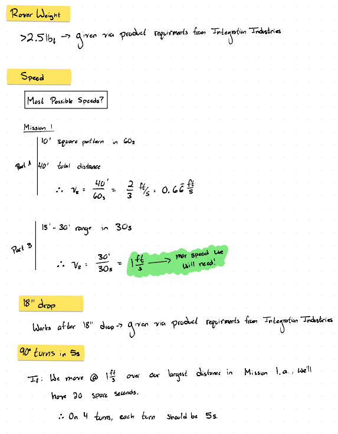
Photo #2 of ENGINEERING SPECIFICATIONS supporting clacs
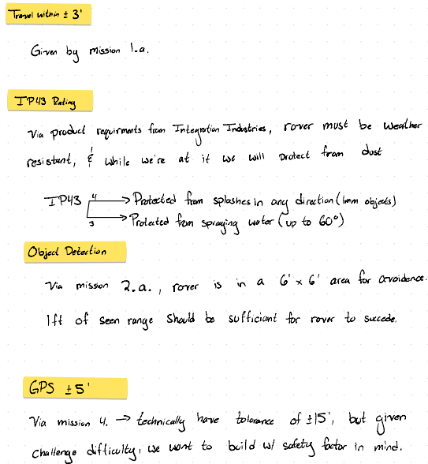
Work Breakdown Structure
Work Breakdown Structure with Subsystems
This tab will show what our work breakdown structure will look like.
Our WBS will contain the following parts:
-
1. Mechanical System
- A. Chassis and off-road wheels
- B. Payload mount
- C. Water-resistant enclosure
-
2. Electrical System
- A. Battery and power regulation
- B. Motors and motor drivers
- C. GPS module
- D. RF receiver
- E. Obstacle sensors
-
3. Software
- A. Firmware setup
- B. GPS processing
- C. RF message decoding
- D. Obstacle avoidance logic
-
4. Integration
- A. Assemble rover
- B. Connect electronics
- C. Load software
-
5. Missions
- A. Mission planning
- B. Mission execution
- C. Mission performance evaluation
-
6. Testing
- A. Drive and mobility test
- B. GPS navigation test
- C. RF communication test
- D. Obstacle avoidance test
- E. Water resistance check
Photo of full WBS
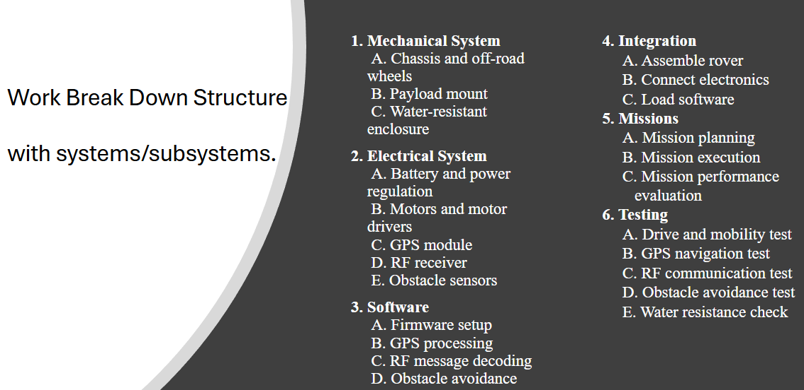
Concept Generation
Concept Generation
This is the Concept Generation Tab. This Concept Generation tab will include, and talk about Principle Concepts, Concept Evaluation, Design Alternatives from said concepts. and description for said concepts. All these following Parts make up/form the overall processes of Concept Generation and Concept Evaluation.
The group decided on the following Principle Concepts. Each of the Principle Concepts will have it's own Principle Concept Description.
Payload delivery
- The Payload Delivery will be a claw/band grip. The rover will use a claw or band-style gripping mechanism to securely hold and transport the payload. This design allows for controlled release while keeping the system lightweight and simple.
Drive Type
- The Drive Type will be a Foward/Skid Type. The rover will use a forward skid-steer drive configuration for improved turning and maneuverability. This system allows tight turns and better control during obstacle avoidance.
Motor Driver
- The motor driver will be a l298N Motor Driver. The L298N motor driver will control the direction and speed of the DC motors. It allows independent control of each motor, enabling precise steering and movement.
Power Supply
- An LM2596 buck converter will regulate voltage from the battery to safely power sensitive electronics. This ensures stable operation of the Arduino and sensors.
Battery Requirements
- The Batter will be a 1300 3s 11.1V Lipo. The rover will use a 3S 11.1V LiPo battery to provide sufficient power for motors and electronics. This battery balances weight, capacity, and performance for mission duration.
Motor Selection
- The Motor selection will be a Geartsian A6207 X 2. Two Gearstian A6207 gear motors will provide the torque required for movement and obstacle navigation. Their gear reduction improves efficiency and ensures reliable traction.
Weight
- The group beleives that the overall weight will be about 346 grams/0.76 pounds. The estimated total weight of the rover is approximately 346 grams (0.76 lb), staying well under the 2.5 lb requirement. Keeping the rover lightweight improves efficiency, durability, and overall perfromance.
The following 2 photos (photos 1-2) show early alternate designs of, Drive Type, Payload delivery design, and Navigation ideas.
Photo #1 Early alternate design ideas for Payload Delivery
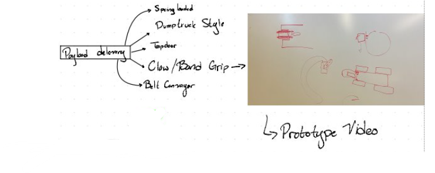
Photo #2 Early alternate design ideas for Drive Type
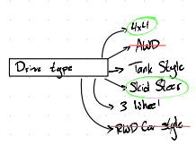
Photo #3 Early alternate design ideas for Navigation

The following 6 photos (photos 4-9) show Concept Evaluation calculations that provide 1-2 senctences of of text for the aforementioned design calculations
Photo #4 Concept Evaluation-Hardwear selction part 1
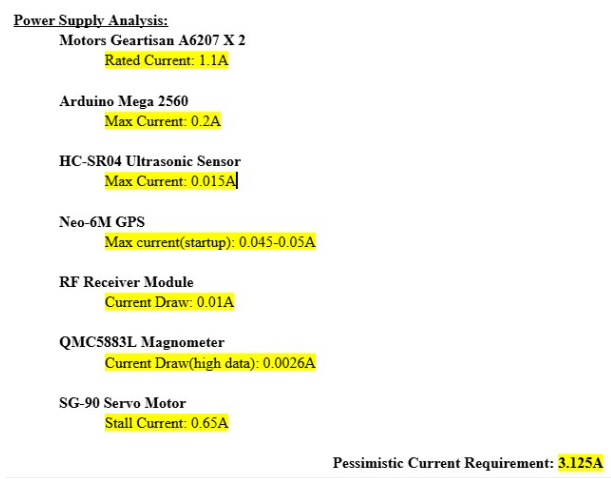
Photo #5 Concept Evaluation-Hardwear selction part 2
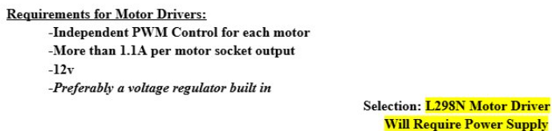
Photo #6 Concept Evaluation-Hardwear selction part 3
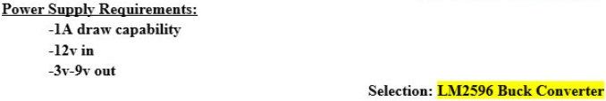
Photo #7 Concept Evaluation-Hardwear selction part 4
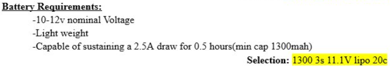
Photo #8 Concept Evaluation-Hardwear selction part 5
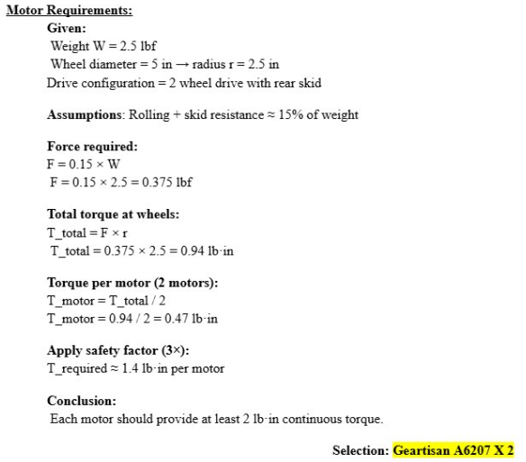
Photo #9 Concept Evaluation-Weight Analysis
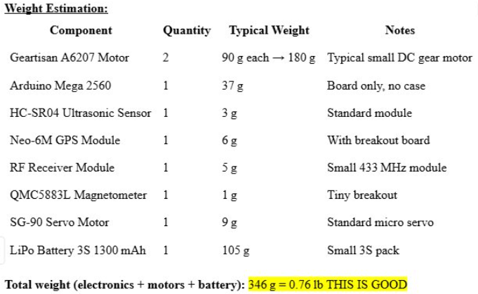
The following photo (photo 10) shows an early concept idea for a possible chasis
Photo #10 (Concept Generation chasis)
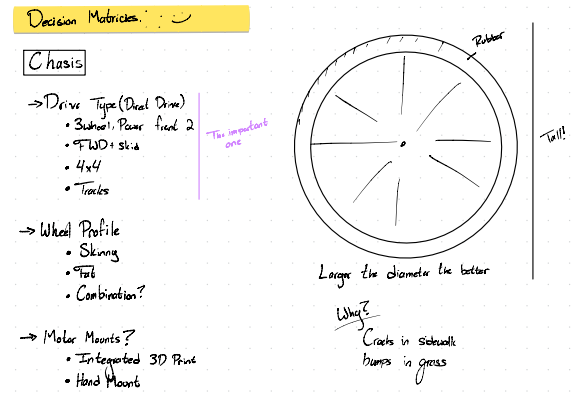
The following will talk about sketches and CAD models
Sketches and CAD models
Team member William made a rough idea on solidworks for a protoype of the rover
(Put future writing here)
Photo #1 rough idea
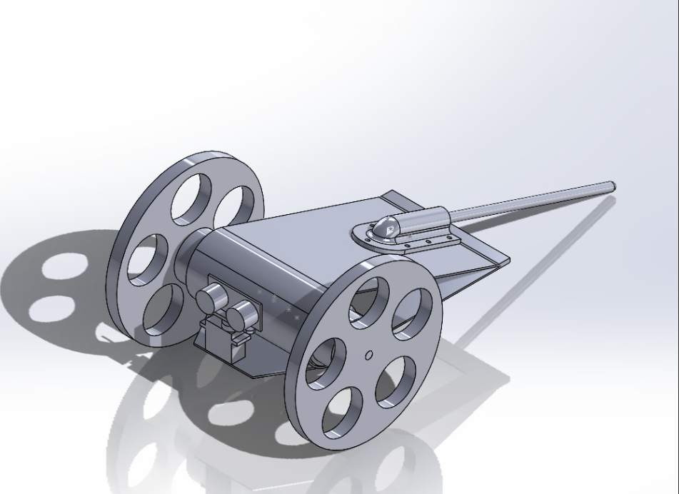
Photo #2 [Put future screenshot of updated rover pic here]

The following will talk about Decision Matrices / Belief Maps.
Decision Matrices / Belief Maps.
The team made a matrix for what they beleived was the right option for the Drive Type. FWD + Skid was the overall pick.
(Put future writing here)
Photo #1
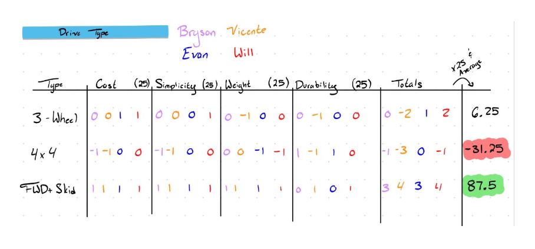
Photo #2

Concept Evaluation Videos/prototyping videos
Concept Evaluation Videos/prototyping videos
This tab will show protoypting videos made through out the semester
The group made a prototype for functionality of holding the block with a hairtie and then and releasing it using a lever
Prototype / Concept Evaluation Video
The following is a video of the tail skid bracket
Tail skid bracket video
The following is a video of team member William squishing/pressing the wheeles together to show how strong it is
Closing wheel video
The following is a video of of our 1st prototype video of the rover, from our 1st couple of tests the rover drifted to the right
1st rover video, drifits to the right
Bill of Materials
A Bill of Materials, or BOM, is essential for our team because it organizes every part and component required for the rover in one clear, structured list. Having a BOM ensures that nothing is overlooked, helps track quantities, and allows the entire team to understand exactly what is needed to complete the build. It also improves planning by showing the cost, size, material, and purpose of each part, which makes development smoother and more efficient.
A BOM is especially useful because it helps us decide whether it is better to make a part ourselves or purchase it. By listing out each component along with its cost and complexity, the team can compare the time, tools, and materials required for fabrication versus simply buying the part. This makes it easier to choose the most practical and cost-effective option. Overall, the BOM is a key tool that keeps the project organized, prevents mistakes, and supports smart decision-making throughout the development process.
Download Here for the BOM PDFPhoto of BOM
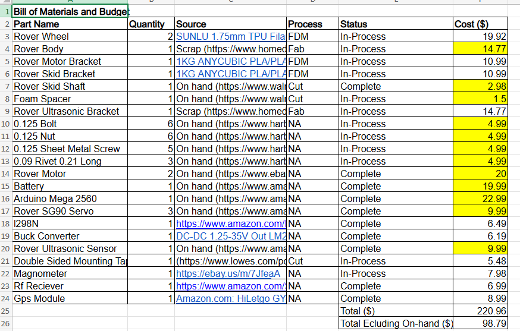
Solid Works Model
The following is a screenshot of our rover design.
Screnshot of updated rover design as of 02/025/2026

The following will be a link to click to download our solidworks model.
Download Here for the Solidworks modelLeave blank for now in case we need another tab for future stuff
Test Plan Documentation
Test Plan Documentaion
At least five test plans are documented including test procedure, statement of associated engineering specification and target value, and pass/fail criteria.
Test Plan 1 Speed
Objective. - Verify that the rover spped is between 0.9-1.1ft/s
Test Plan 2
Test Plan 3
Test Plan 4
Test Plan 5
Leave blank for now in case we need to write more future stuff
Leave blank for now in case we need another tab for future stuff